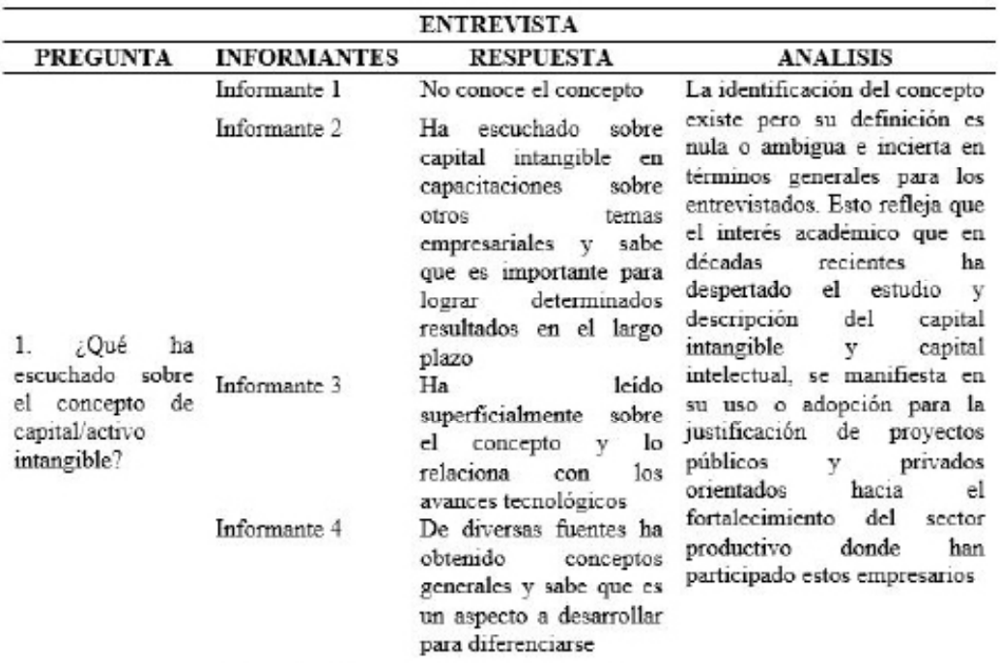

Introducción
La informalidad es una manifestación
de los procesos económicos de una zona
geográfica y/o sector productivo definido, que
en los últimos años se ha convertido en un
indicador que permite analizar un aspecto social
del desempeño económico, a nivel productivo,
normativo y laboral con los respectivos efectos
sobre la competitividad (Portes y Haller,
2014). La definición y caracterización de la
informalidad en las unidades productivas es de
reciente inclusión en la literatura económica a
pesar de ser un fenómeno que se ha observado
históricamente en diversos países desde la
revolución industrial y su importancia actual
radica en la descripción de las relaciones
productivas con el objetivo de generar
empleo, bienestar, conocimiento, rentabilidad
y/o valor agregado a los productos o servicios
en el entorno de lo que se ha denominado
economía del conocimiento, la cual se basa en
la creación o aumento del capital intangible en
la conformación actual de las empresas como
principal ventaja competitiva (Sandoval, 2014).
En este sentido, el capital intangible ha sido
dado a describirse como los bienes inmateriales
susceptibles de generar beneficios a futuro,
comprende aquello que no tiene una existencia
material y no se puede cuantificar pero se
refleja en la contabilidad y tiene efectos en
el funcionamiento de la empresa así como en
su entorno competitivo y en el mercado; tales
como la innovación, la creatividad, el liderazgo,
las alianzas comerciales y/o estratégicas,
la organización o capital humano (Bello y
otro, 2013). Los intangibles tienen relevancia
especial dentro de determinadas industrias
en razón a la naturaleza de las últimas, ya
que determina el valor de las empresas por
la capacidad de crear y desarrollar nuevos
productos y procesos asociados a los mismos,
es el caso de la industria de la moda que
abarca subsectores donde la creatividad, el
saber-hacer, la ID+d, la propiedad intelectual,
el talento individual, la visión y la dirección, la marca y los secretos industriales entre otros
atributos, son determinantes del éxito de una
empresa (Dillon, 2012) al mismo tiempo, la
moda integra diversas actividades económicas
cuyas operaciones a nivel mundial, representan
un mercado que equivale a la 7a economía en
tamaño (formaría parte del G8) y dobla al del
sector de electrónica y computación, una de
las mayores en la creación de valor agregado
y de intangibles y una de las más intensivas
en mano de obra (Mamoq, 2018). Actualmente
los centros de producción industrial de
la moda se han trasladado a países con
economías emergentes, dejando en los países
industrializados la creación de intangibles que
representan el mayor valor agregado en la
industria, la cual está en crecimiento, mientras
que el valor decrece en la producción de
forma constante y es donde se busca reducir
mayores costos.
En el caso de Colombia, los indicadores
expresan comportamientos alentadores
aunque las oportunidades de mejora siguen
siendo un reto importante para la industria
de la moda. Según la Superintendencia de
Sociedades - Supersociedades (2017), el
sector del Textil y Confección ha reflejado
el dinamismo internacional, aportando
en 8.8% del PIB del país en 2016 con un
crecimiento del 3.0% con respecto al año
anterior, sin embargo el DANE a través de
la Encuesta Anual Manufacturera develó
que durante ese mismo año la producción
de confecciones decayó 5.9% manteniendo
esta tendencia negativa toda la cadena de
valor en diferentes proporciones, también, la
venta de confecciones registró una variación
negativa de -1.9%. El no cumplimiento de las
metas sectoriales trazadas por el Programa de
Transformación Productiva - PTP del Ministerio
de Comercio, Industria y Turismo en el Plan de
Negocios 2009, motivó la actualización del
documento en el año 2016 donde se realiza un
diagnóstico de necesidades que se dividen en
cuatro áreas: Capital humano, fortalecimiento
industrial, marco normativo e infraestructura y sostenibilidad; todas con alto componente
de creación de activos intangibles, capital
intelectual y gestión de conocimiento: marca,
Investigación y Desarrollo (I+D+i), transferencia
tecnológica, formación del talento humano,
creación de valor agregado, certificaciones
y sistemas de gestión, Tecnologías de la
Información (TIC).
La industria de la moda de Colombia, tiene
como uno de sus núcleos a Cúcuta cuyo
nutrido sector industrial de confecciones tiene
sus orígenes en la fuerte vocación comercial
derivada de la ventaja comparativa de ser
una ciudad fronteriza con un mercado que
durante muchos años mantuvo un alto nivel
de vida; la constante y creciente demanda de
artículos de moda como prendas de vestir,
calzado y accesorios, hizo de Cúcuta un
lugar propicio para la fabricación de estos
productos debido a las ventajas por motivos
de costos que representaba la tasa de cambio
entre las monedas de Colombia y Venezuela.
Según Suárez (2016) la actual situación política
y económica de Venezuela ha deteriorado
de forma ostensible la calidad de vida de las
personas y, con el paso fronterizo restringido, los
niveles de intercambio comercial decrecieron
drásticamente, hechos que sumados a la
inestabilidad económica y política que dificulta
la realización de negocios. La necesidad de
diversificar los mercados de las empresas,
ha evidenciado el carácter marcadamente
productor de la industria cucuteña que para
mantenerse a flote debe iniciar su tránsito a
la economía del conocimiento y generar las
capacidades para la creación de intangibles
(Ibídem).
Dentro de esta lógica, el siguiente paso para el
sector industrial de las confecciones en Cúcuta,
como resume Acosta, et al. (2016) es aumentar
su competitividad a través de la innovación,
valor agregado, diseño, calidad y marketing
para lograr la fidelización de los clientes/
usuarios como estrategia para afrontar los
grandes cambios que implica la globalización en la economía del conocimiento. Para establecer
la relación entre la informalidad empresarial
de la industria de la moda en Cúcuta con la
capacidad de generar activos intangibles a
través de la gestión del capital intelectual,
primero se procederá a indagar la situación del
conocimiento de activos intangibles y capital
intelectual en las empresas de confecciones
de Cúcuta, para posteriormente analizar los
factores de la situación del conocimiento de
Activos Intangibles y Capital Intelectual en las
empresas y develar el uso y aplicación de los
Activos Intangibles y Capital Intelectual.
La investigación propuesta plantea una
aproximación al fenómeno de la informalidad
y sus efectos sobre la capacidad de generar
valor y activos intangibles con el fin de describir
la disminución gradual de los precios de
mercado de los artículos de moda fabricados
por las empresas en lugares con vocación
productiva, que actúan como proveedores
y sin posicionamiento en el mercado, en
contraposición con el aumento del valor
agregado por las marcas líderes de la industria
de la moda, las cuales demandan los artículos
de los proveedores mencionados, al menor
precio posible. Esta industria es dinamizadora
de la economía en varios países debido a su
requerimiento intensivo de mano de obra, sin
embargo, la sostenibilidad económica y social
no está garantizada por las condiciones de
informalidad en que se desarrollan las labores
en algunos países con legislación laboral que
no contempla la generación de condiciones
dignas para los trabajadores y es permisiva
con prácticas que privilegian la necesidad de
reducir costos sobre la remuneración justa.
En este orden de ideas, el análisis de las
capacidades para la generación de capital
intelectual y activos intangibles como
estrategia para agregar valor, representaría
una posibilidad de aumentar la competitividad
de las empresas productoras de confecciones
que conforman la cadena de valor de las
marcas, a través de la especialización del capital humano, la aplicación de conocimiento
y uso de tecnologías que configuren una
propuesta de valor para el mercado, con lo
cual estas empresas proveedoras pueden
mejorar su posición negociadora ante una
marca. Tal situación representaría un aumento
en el precio y por lógica organizacional y de
mercado, este iría en gran parte al personal
que conforma o desarrolla el activo intangible.
A partir de lo mencionado, los resultados del
presente trabajo pueden constituir el insumo
en el desarrollo de un modelo de gestión
de capital intangible para las empresas de
confecciones proveedoras de marcas, que
facilite la sistematización parcial de la creación
de una propuesta de valor y/o la aplicación de
una metodología en diversos entornos que
permita mejorar las condiciones negociación
y la remuneración así como las condiciones
laborales, transformando en capital humano
al personal que actualmente se desempeña
como mano de obra en la industria de la moda.
Marco Teórico
La informalidad como fenómeno económico
ha sido observada desde diversos enfoques
y analizada a la luz de varias teorías. La
definición que de la misma realizó por
primera vez Keith Hart en 1973 en un informe
elaborado para la OIT con ocasión de la
investigación del mercado laboral urbano en
África, es considerada el punto de partida de
la caracterización de este fenómeno y de los
parámetros para su medición y estudio. En la
comparación de las estadísticas con respecto
a la evolución de la estructura del mercado
laboral a partir de datos comparativos de países
altamente industrializados con otros menos
industrializados, Sandoval (2014) concluye que
la teoría económica clásica de origen marxista
no explica el desempleo en las economías de
mercado y su relación con la informalidad en
el contexto contemporáneo.
En cuanto a la informalidad, tanto laboral
como empresarial, son pobres los indicadores
para Cúcuta y su área de influencia, por lo que
establecer la relación entre este fenómeno
y los bajos niveles de productividad y
competitividad, es un tema que han abordado
la Cámara de Comercio de Cúcuta y otros (2013)
con miras a la fundamentación y generación
de políticas dirigidas a la recuperación y
fortalecimiento del tejido empresarial cuya
estructura productiva, comercial y de servicios
está conformada principalmente por pequeñas
empresas, que usualmente ven limitado
o estancado su crecimiento por factores
competitivos, siendo propensas a operar bajo
algún grado de informalidad en sus procesos
para subsistir.
Las características de la zona objeto de
esta investigación, han suscitado el análisis
académico de la economía fronteriza, en
áreas como la competitividad, productividad
e informalidad al ser estos factores de la
realidad empresarial y social que expresan
los indicadores económicos. La generación
de ventajas competitivas, estrategias de
productividad e innovación con enfoque
en el valor agregado, calidad y diseño
para fidelización de clientes y usuarios,
son planteadas como una necesidad para
aumentar la competitividad y la productividad
en las empresas del sistema moda de Cúcuta
por Acosta y otros (2015), dado el bajo grado
de compromiso e interés dentro de la industria
hacia la ejecución de actividades en pro de la
mejora en la eficiencia y eficacia de las empresas
del sector, a través de la estandarización de
procesos, y la ausencia de direccionamiento
estratégico de estas unidades productivas,
con base en la adecuada gestión del talento
o capital humano en aras de aumentar la
competitividad sectorial.
La industria de la moda es un sector en
constante crecimiento y “se caracteriza por
la innovación y uso intensivo de la creación
y el conocimiento, lo que irremediablemente as hace propietarias y usuarias de un elevado
volumen de intangibles y de indispensable
capital humano”, es la reflexión sobre el manejo
de intangibles y capital social en la industria de
la moda que realizan Bello y Echavarría (2013);
los intangibles constituyen activos que deben
ser evaluados y valorados correctamente
para incluir en balances contables en la
conformación del capital social de las
empresas, tomando en cuenta que existan
términos homogéneos para la valoración de
los intangibles en la industria, ya que estos
inciden en aspectos competitivos, legales y
tributarios que representan una importante
reserva para las marcas reconocidas pero son
pasados por alto en las empresas pequeñas
que son la mayoría en el tejido productivo.
Activo intangible y capital intelectual
El uso de estos dos conceptos ha sido objeto
de debate para diversos autores y académicos
y no se ha llegado a establecer una definición
ampliamente aceptada, a pesar de que “la
importancia y el conocimiento y del capital
intelectual se conoce desde la antigüedad,
donde civilizaciones como la griega o la
egipcia presentan las primeras evidencias de
codificación de conocimiento… como una
forma de incrementar su poder regional”
(Sánchez, et al. 2007), desde entonces y hasta la
década del 90 del Siglo XX, cuando es notorio
el interés por llegar a una conceptualización
dentro de un marco soportado en las teorías
existentes, la definición de tales conceptos
ha representado un reto para los académicos
(Ibídem). Según Simó y Sallán (2008), el capital
intelectual se define “como conocimiento que
crea valor, siendo por tanto un caso particular
de activo intangible” y de acuerdo con Lev
(2001) a pesar del amplio uso de los conceptos
capital intelectual, activos intangibles y activos
de conocimiento, su diferencia radica en el
ámbito de la disciplina siendo preferido en la
contabilidad el uso de activos intangibles, en
economía el de activos de conocimiento y en
administración el de capital intelectual.
Siguiendo esta línea, se establece que las
definiciones que hablan de la representación
de los activos en los balances financieros en
la cuenta denominada fondo de comercio,
tienen enfoque hacia las disciplinas contables
y son insuficientes para abarcar la totalidad
de elementos que se consideran intangibles y
generan valor para la organización, aún cuando
no sean registrados contablemente. Para
ilustrar los diferentes enfoques de la definición
de capital intelectual y activo intangible, se cita
la metáfora de Edvinson y Malone (2009): “Una
corporación es como un árbol. Hay una parte
que es visible (las frutas) y una parte que está
oculta (las raíces). Si solamente te preocupas
por las frutas, el árbol puede morir. Para
que el árbol crezca y continúe dando frutos,
será necesario que las raíces estén sanas y
nutridas. Esto es válido para las empresas:
si sólo nos concentramos en los frutos (los
resultados financieros) e ignoramos los valores
escondidos, la compañía no subsistirá en el
largo plazo”.
En la actualidad, la mayoría de los autores
acepta que los conceptos de capital intelectual
y activos intangibles ha superado la limitación
de su presencia en los estados financieros y
basan sus aportes en la evolución de lo que han
representado para las actividades económicas
a lo largo de la historia y sus implicaciones
en los tiempos actuales donde se está
configurando un nuevo paradigma económico
donde son cada vez más relevantes, tal como
lo interpreta Peralta (2002) a partir del texto
de Brooking (1997): “el capital intelectual no
es nada nuevo, sino que ha estado presente
desde el momento en que el primer vendedor
estableció una buena relación con un cliente.
Más tarde, se le llamó fondo de comercio.
Lo que ha sucedido en el transcurso de las
dos últimas décadas es una explosión en
determinadas áreas técnicas claves, incluyendo
los medios de comunicación y la tecnología de
la información y las comunicaciones, que han proporcionado nuevas herramientas con las
que se ha edificado una economía global”.
Si bien se encuentran diferencias en los
conceptos de activo intangible y capital
intelectual, se evidencia que el último tiene
relación con el conocimiento y su adecuada
gestión para la crear valor a la empresa (Simó
y Sallán, 2008).
Informalidad
De acuerdo con (De Soto, 1987), La informalidad
es una categoría que nace de la observación
empírica de un fenómeno, se trata de una
zona de penumbra que comparte una extensa
frontera con el mundo legal y “donde los
individuos se refugian cuando los costos de
cumplir las leyes exceden sus beneficios”
Cartaya (1987) habla de “elevar el nivel
de vida de la población que vive y trabaja
en la informalidad, potenciar los aspectos
relacionados con la capitalización y
productividad de los micronegocios y mejorar
los sistemas de administración de los mismos”.
Un cuarto factor se fue agregando a medida
que ganaban espacios las lecturas neoliberales
del problema: la simplificación administrativa
y el pago de impuestos. Es sabido que ese
“confuso mundo del sector informal.
Estos autores determinan que la informalidad
está integrada por un enorme universo de
pequeños productores y trabajadores por
cuenta propia que evaden el pago de impuestos
y los compromisos de cotizar en las cuentas de
los sistemas de seguridad social; un informe de
la Organización Internacional del Trabajo (OIT),
elaborado en 1972, ofreció la oportunidad de
identificar y situar en el campo de la teoría y en
el terreno de las políticas públicas a un sector
social que escapaba a los paradigmas clásicos
de empresarios y trabajadores; terratenientes
o industriales; comerciantes y clases medias.
Había indicios abrumadores de que una vasta
capa de la población trabajadora de los países periféricos obtenía sus ingresos de actividades
laborales que no estaban claramente definidas
en los estudios y diagnósticos que servían
de base para sustentar los programas de
asistencia social y de combate a la pobreza.
El tema había sido parcialmente tratado, por
la sociología marxista, como un fenómeno
de crecimiento desmesurado del trabajo no
asalariado, y de formas atípicas de producción
en las sociedades menos desarrolladas.
Competitividad
“El análisis de la competencia es un aspecto
clave del necesario seguimiento de los
mercados, éste aborda la evaluación de las
fortalezas y debilidades de los competidores
actuales y de los potenciales, una técnica muy
utilizada, es la caracterización y clasificación
de los competidores principales según los
siguientes pasos: definir el negocio - el alcance
y la naturaleza del negocio”
Por otra parte Mahmood (2000) sostiene que la
ventaja competitiva es creada y apropiada por
firmas individuales (características de bienes
privados), “…claramente, uno no debe escoger
entre uno de los dos paradigmas, pues no son
ni mutuamente exclusivos ni explícitamente
separables. Entonces, podemos sostener que es
inapropiado presentar a la ventaja competitiva
como una alternativa (sustituta) de la ventaja
comparativa. Las dos teorías tienen que ser
debidamente vistas como complementos más
que como competidores en la formulación de
políticas comerciales e industriales”
Valor Agregado
Como lo explican Castellano y Goizueta
(2015), el Valor Agregado es la diferencia
entre la producción y el consumo intermedio y
representa la contribución de la mano de obra y
el capital al proceso productivo, este concepto
está directamente vinculado con el producto
bruto interno (P.I.B.), ya que este mide el total
del valor agregado de todas las unidades institucionales de la economía; permitiendo
realizar un análisis conceptual amplio sobre
el tema explicando distintas iniciativas de
valor agregado desde la perspectiva pública
y privada incorporando el concepto “valor
agregado institucional”.
En cambio Porter y Kramer (2011) hablan
sobre el “valor compartido” vinculando la
competitividad de la empresa con la mejora
de las condiciones sociales y económicas de
la comunidad donde opera, y Champredonde
y González Cosiorovski (2013) proponen un
enfoque multidimensional a través del concepto
“valor integral” de recursos territoriales, donde
se traslada el foco de atención del producto
hacia el conjunto de actores involucrados
en un proceso de valorización, e implica
considerar las actividades humanas en toda su
complejidad.
Por otra parte, desde el punto de vista
microeconómico, el valor agregado (V.A.) según
el Diccionario de Oxford (s.f.) es “el monto por
el cual el valor de un producto se incrementa
en cada etapa de su producción, excluyendo
los costos iniciales”. La FAO lo define como
“la diferencia entre lo que cuesta poner un
producto de determinadas características en
el mercado y lo que el cliente está dispuesto a
pagar por él, o lo que éste percibe como valor”,
introduciendo en la definición el concepto de
calidad.
El énfasis de estos autores es ampliar el
significado del término “valor” y así permitir
satisfacer la necesidad de proporcionar una
gran pista a la hora de desarrollar nuestros
productos, es decir permite conocer cuáles
son los atributos que valoran nuestros clientes,
cuáles son sus necesidades y qué problema
quieren resolver, para seguir avanzando en el
mercado.
Materiales y métodos
El presente estudio es de tipo cualitativo y de
alcance descriptivo. Se obtiene la información
inicial de fuentes documentales por medio
de revisión bibliográfica para sintetizar los
conceptos clave que permiten la definición
teórica de los activos intangibles y el capital
intelectual desde diferentes enfoques
disciplinares.
La recolección de los datos se realiza por medio
de entrevistas a micro y pequeños empresarios
de las confecciones con participación en una
entidad gremial específica y al representante
de la misma. El análisis de la información es
plasmado a través de la tabulación de las
respuestas con la respectiva conclusión donde
se establece la relación entre los conceptos
teóricos y el fenómeno investigado.
Resultados y análisis
Las entrevistas fueron realizadas a propietarios
y/o administradores de micro y pequeñas
empresas de confecciones agremiadas en una
entidad al representante de la misma por ser
partícipes y sujetos de los fenómenos objeto de
estudio conceptualizados en el marco teórico.
El grupo seleccionado ha demostrado interés
en aumentar su productividad, competitividad
e implementar estrategias para tales fines,
solicitando acompañamiento de instituciones
educativas y entidades sectoriales en proyectos
colectivos e individuales.
Tabla 1. Análisis de respuestas a entrevista.

La realización de las entrevistas permitió
experimentar de primera mano la confusión
que genera la conceptualización de los activos
intangibles y capital intelectual entre los
empresarios, la situación tiene sentido si se
analiza en paralelo con el proceso de definir
el marco teórico, que no ha sido un recorrido
rápido y en línea recta para la academia y
se encuentra en construcción, con lo que
se puede inferir que el sector productivo
es sujeto de unas fuerzas que aún no están
plenamente estudiadas y sin embargo ejercen
una influencia notable en las actividades
de producción, de comercialización y de
direccionamiento estratégico a los nuevos
escenarios donde se gestan los negocios de
la industria, tales como la creación de valor, la
transformación o adaptación tecnológica en
relación con el mercadeo y el servicio al cliente
que exige formas novedosas de concebir la
actividad de la empresa a través del desarrollo
de un modelo de negocio con capacidad de
adaptación a los requerimientos del mercado, en un entorno de alta competencia a nivel
global.
Conclusiones
Las empresas ya no son vistas o aprehendidas
como un conjunto de infraestructura física y de
recursos materiales que reposan en oficinas,
bodegas o cuentas bancarias para conocer la
realidad tras el comportamiento de la industria
de la moda, es necesario tener en cuenta la
gestión de los activos intangibles y de capital
intelectual. La relevancia que han tomado estos
factores y el volumen de literatura producido
en los últimos años explicando sus efectos
y su manejo para el logro de determinados
objetivos, hace que, incluso sin ser conscientes
de ello, gran parte de la industria ya esté
inmersa en algún tipo de acercamiento
con los activos intangibles y que construya
conocimiento y capital intelectual que aún no
hace parte de sus estados financieros.
En cuanto a las micro y pequeñas empresas de
confecciones como agentes de una industria
con un alto nivel de crecimiento y creadora
intensiva de capitales intangibles, su situación
de expectativa ante lo que representa este
nuevo tipo de gestión y el proceso de adaptación
a la nueva economía del conocimiento los
ha convertido en espectadores de los altos
beneficios que representa para quienes
se han iniciado en la consolidación de sus
activos intangibles y capital intelectual desde
tiempo atrás y lo perciben en el crecimiento
espectacular de marcas de transnacionales
que han deslocalizado su producción y gracias
a internet han incursionado en mercados con
cada vez más rapidez, convirtiendo a estas micro
y pequeñas empresas en proveedoras dentro
de los modelos de negocio desarrollados por
las mencionadas marcas.
La situación de Cúcuta en particular involucra
factores derivados de la transición económica
de la industria de la moda ante los efectos
generados por los cambios en la dinámica
fronteriza; donde los históricos niveles de
informalidad empresarial y la competitividad
-dada principalmente por el tipo de cambio de
la moneda de su mercado histórico- pueden
ser mitigados a través de la gestión de activos
intangibles y capital intelectual configurando
un escenario para validar la relación entre los
intangibles y el aumento de la competitividad
planteada en el presente estudio, según
Stewart (1998) “la gestión del conocimiento
es el conjunto de procesos que hacen que el
Capital Intelectual de la empresa crezca” por
lo tanto es una herramienta necesaria para el
adecuado aprovechamiento de la actividad que
ya realizan las empresas de confecciones en su
sector, generando y consolidando los activos
intangibles de terceros, y que haría sostenible
cualquier estrategia regional o particular
tendiente al fortalecimiento de la industria
en términos de excelencia, innovación y valor
agregado.
Es importante tener en cuenta que debido
a la naturaleza misma del objeto de estudio
y su carácter elusivo en el paradigma de la
actividad de la industria de la moda en Cúcuta
que, según el análisis de las entrevistas, aún no
está siendo identificado, asimilado y aplicado
para su aprovechamiento y aumento, un
punto de partida válido es la caracterización
de la cadena de valor de las confecciones para
conocer la estructura del tejido empresarial
y realizar una intervención precisa y alineada
con las capacidades ya generadas por las
empresas para satisfacer los requerimientos
actuales y futuros de los mercados objetivo.
Por último, enfatizar que el presente estudio
busca llevar a un análisis para describir unos
indicadores que son valorados dentro de la
economía del conocimiento y por lo tanto el
objetivo amplio es contribuir a la incorporación
del sector de las confecciones de Cúcuta en el
mercado global creando valor y cambiando el
horizonte de visión hacia una frontera con el
mundo.
Referencias
- Acosta, L., Jaimes, D., Vargas, B., & Velásquez,
M. (2015). Comparativa de competitividad del
sector de la moda entre Cúcuta y el resto del
país. Revista Convicciones, 2(4), pp. 47 - 56.
Descargado http://www.fesc.edu.co/Revistas/OJS/index.php/convicciones/issue/view/15
- Albouy, D., & Adesida, O. (2018). Sustainable
fashion blueprint 2018. Obtenido de https://www.mamoq.com/journal/sustainable-fashionblueprint-2018/
- Bello, S., & Echavarría, P. (2013). Los intangibles y
el capital social en las empresas de la moda. En
Memorias XII Congreso Argentino de Derecho
Societario y VIII Congreso Iberoamericano de
Derecho Empresario y de la Empresa. Buenos
Aires. Acceso: http://www.susybelloknoll.com/bienes-intangibles-moda/#_ftnref29
- Brooking, A. (2004). El capital intelectual.
Barcelona: Paidós.
- Cámara de Comercio de Cúcuta. (2013). Estudio
sobre la informalidad empresarial en el
municipio de Cúcuta y su área de influencia.
Cúcuta: Universidad de Santander - UDES.
Obtenido de http://www.datacucuta.com/index.php/informalidad/535-estudio-2013
- Cartaya, V. (1987). El confuso mundo del sector
informal. En Nueva Sociedad Nº 90, Caracas,
7-8. Obtenido de https://nuso.org/articulo/elconfuso-mundo-del-sector-informal/
- Champredonde, M. y Gonzalez Cosiorovski, J.
(2013). ¿Agregado de Valor o Valorización
integral? Reflexiones a partir de Denominaciones
de Origen en América Latina. VIII Jornadas
Interdisciplinarias de Estudios Agrarios y
Agroindustriales. Buenos Aires. Acceso: http://www.redalyc.org/pdf/4695/469546924008.pdf
- De Soto, H. (1987). El otro sendero: la revolución
informal. México: Editorial Diana.
- Dillon, S. (2012). Principios de gestión en empresas
de moda. Barcelona: Editorial Gustavo Gili.
- Edvinsson, L., & Malone, M. (2003). El capital
intelectual. Barcelona: Gestión 2000.
- Lev, B. (2001). Intangibles: Management,
Measurement And Reporting, Bookings
Institution Press.
- Mahmood, A. & Fidelis Ezeala, H. (2000).
Comparative versus competitive advantage,
and competitiveness in developing countries.
En: Socioeconomic Development in the 21st
Century. Calcuta: International Institute for
Development Studies, pp.241-256.
- Peralta Alemán, G. (2002). De la filosofía de la
calidad al sistema de mejora contínua. México: Panorama.
- Portes, A. & Haller, W. (2004). La Economía
Informal. Santiago de Chile: Cepal. Obtenido de
https://repositorio.cepal.org/handle/11362/6091
- Salvador, G. (2016). Agregado de valor:
Compartiendo conceptos. Acceso https://inta.gob.ar/sites/default/files/agregado_de_valor._compartiendo_conceptos.pdf
- Sánchez, A., Melián, A. y Hormiga E. (2007).
El concepto de capital intelectual y sus
dimensiones. Investigaciones Europeas De
Dirección Y Economía De Empresa, 13(2),
97-111. Obtenido de http://www.redalyc.org/articulo.oa?id=274120280005
- Sandoval, G. (2014). La informalidad laboral:
causas generales. Equidad & Desarrollo (22),
pp. 9-45. Descargado de https://dialnet.unirioja.es/descarga/articulo/5166528.pdf
- Simó, P., & Sallán, J. (2008). Capital intangible
y capital intelectual: Revisión, definiciones y
líneas de investigación. Estudios De Economía
Aplicada, 26(2), pp. 65 - 78. Obtenido de: http://www.redalyc.org/html/301/30113187004/
- STEWART, T. (1998). La nueva riqueza de las
organizaciones: el capital intelectual. Ediciones
Granica.
- Suarez, E. (2016). Diagnóstico de la situación del
desarrollo económico de Cúcuta durante las
dos últimas administraciones, como base para
la creación de una Zona de Régimen Aduanero
especial en la ciudad. Bogotá: Universidad
Colegio Mayor de Nuestra Señora del Rosario.
Obtenido de: http://repository.urosario.edu.co/handle/10336/13085
- Superintendencia de Sociedades. (2017).
Desempeño del sector textil - confección.
Bogotá: Delegatura de Asuntos Económicos y
Contables. Obtenido de https://incp.org.co/Site/publicaciones/info/archivos/Textiles.pdf